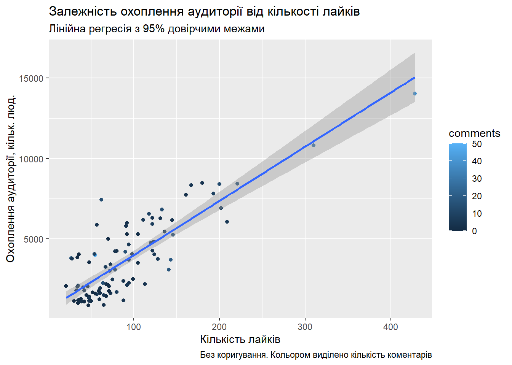

Розділ 6 Модуль 2. Моделювання. Лабораторна робота №5. Побудова регресійних моделей
Мета: Засвоєння базових принципів, знайомство з інструментами та набуття навичок побудови моделей регресії на рівні технології на основи статистичного підходу та моделей машинного навчання засобами мови програмування R та колекції пакетів dplyr, ggplot2.
6.1 Що ви будете вміти?
- будувати моделі парної і багатовимірної лінійної та нелінійної регресії на основі статистичних моделей та моделей машинного навчання засобами мови R у середовищі IDE RStudio.
6.2 Короткі теоретичні відомості
У рамках життєвого циклу процесу Data Mining згідно з методологією CRISP DM (wikipedia 2018a), наступною за фазою “Підготовка даних” (Data Preparing) є фаза “Моделювання” (Modelling) (рис. 1).
Фаза моделювання призначена для вибору оптимального методу побудови моделей і налаштування його параметрів для отримання оптимальних рішень. На даній фазі вирішуються наступні задачі:
- вибір методу моделювання;
- генерація тестового проекту;
- створення моделей;
- оцінка моделей.
Згідно з класичним розумінням технологія Data Mining передбачає побудову моделей, які можна віднести до одного з п’яти основних класів: кластеризація (сегментація) та аналіз відхилень, регресія, класифікація, пошук асоціативних правил та аналіз послідовних шаблонів.

Рис. 1. Задача моделювання у складі Data Science-проекту (Garrett Grolemund 2018)
Задача сегментації та аналізу відхилень розглядалася нами як складова розвідувального аналізу даних лаб. роб. №3 у рамках базового модулю.
У рамках даного модулю буде розглянуто решту моделей. Ця лабораторна робота присвячена регресійному аналізу. Побудова моделей класифікації розглядатиметься у лабораторній роботі № 6.
6.2.1 Що таке регресія і регресійний аналіз?
Регресія і класифікація
Між задачею класифікації і регресії існує багато спільного і в самому загальному вигляді їх можна розглядати як одну. Вона може бути сформульована наступим чином: припустимо, що об’єкт, який нас цікавить, описується вектором \(n\) незалежних змінних \(X_1, X_2, \dots, X_n\), які називаються предикторами. Існує деяка величина \(Y\), яка також характеризує досліджуваний об’єкт, але залежить від \(X_1, X_2, \dots, X_n\). Ми маємо колекцію наборів спостережень незалежних змінних у вигляді матриці \(X\) та залежної змінної у вигляді вектора відгуків \(Y\):
\[X=\begin{bmatrix}
x_{11} & x_{12} & \cdots & x_{1,n} \\
x_{21} & x_{22} & \cdots & x_{2,n} \\
\vdots & \vdots & \ddots & \cdots \\
x_{n1} & x_{n2} & \cdots & x_{n,n} \\
\end{bmatrix},\]
та
\[Y=\begin{bmatrix}
y_1 \\
y_2 \\
\vdots \\
y_n
\end{bmatrix}.\]
На основі інформації, яку несуть у собі наявні значення \(X\) та \(Y\) необхідно побудувати модель, яка буде передбачати значення відгуку \(y^*\) для будь-якого заданого набору незалежних змінних \(x^*_1, x^*_2, \dots, x^*_n\)
Відмінність полягає у наступному (рис. 1): якщо значення відгуку носять дискретний характер, говорять про задачу класифікації, якщо неперервний – має місце задача регресії.

Рис. 1. Ілюстрація задач класифікації і регресії (Viacheslav Oreshkov 2012)
Таким чином логічно припустити, що і з точки зору математичного апарату та алгоритмів, що його реалізують при розв’язанні задач регресії і класифікації, має бути багато спільного, але, звичайно, мають бути і відмінності.
У цій лабораторні роботі розглядаються методи і засоби регресійного аналізу.
6.2.2 Формальна постановка задачі регресії
З точки зору параметричного підходу задача регресії полягає у побудові моделі функціональної залежності математичного сподівання відгуку \(Y\) за допомогою невідомої функції регресії \(f(\dots)\) з використанням навчальної вибірки: \[E(Y|x_1, x_2, ..., x_n)=f( \beta, x_1, x_2, ..., x_n) + \epsilon,\] де залишки \(\epsilon\) відображають похибку моделі, тобто непояснену випадкову варіацію спостережуваних значень залежної змінної відносно очікуваного середнього значення. Такий підхід називається статистичним.
Однак далеко не завжди можливо підібрати адекватну функцію регресії за умови великої кількості предикторів та(або) за умови складного характеру самої регресійної залежності. Тому наразі добре вивчені і широко поширені моделі регресії на основі машинного навчання, які дозволяють розв’язувати цю проблему.
У роботі (Manuel Fernandez-Delgado 2014) автори дослідили широке коло існуючих моделей класифікації і зробили висновок стосовно чьотирьох класів моделей, які мають найбільшу точність:
* Випадковий ліс” (Random Forest);
* Машини опорних векторів (Support Vector Machines);
* Штучні нейронні мережі (Artificial Neural Networks);
* Бустінгові ансамблі моделей (Boosting Ensembles).
Однак автори слушно зауважують, що, “перелічені методи практично непридатні для інтерпретації механізмів явища, яке прогнозується, що викликало ряд критичних зауважень.” На підтвердження даної думки можна навести той факт, що тема моделей, які можуть бути пояснені (Explainable artificial intelligence, пояснимі моделі) наразі є найгорячишою темою дискусій у професійному середовищі аналітиків даних.
Досвід показує, що в тих випадках, коли кількість предикторів є невеликою і залежність є незанадто складною, параметричні методи дозволяють побудувати адекватну модель з високою прогностичною силою, яка одночасно дозволяє і легку інтерпретацію поведінки об’єкта, що вивчається.
Нижче розглядається статистичний підхід на основі методу найменших кравдратів (МНК) і підхід на основі машинного навчання на прикладі випадкових лісів.
6.2.3 Статистичний підхід
Будемо використовувати матричний підхід.
Модель лінійної за параметрами регресії у матричній формі має вигляд:
\[Y=X\beta+\epsilon.\]
На практиці ми шукаємо оцінку цього рівнняння:
\[\hat{Y}=Xb,\]
де \(b=\begin{bmatrix} b_0 \\ b_1 \\ \vdots \\ b_k \end{bmatrix}\).
На практиці маємо матрицю спостережень предикторів \(X\) та вектор відгуків \(Y\). Введемо вектор залишків \(\epsilon\):
\[\epsilon=\begin{bmatrix} \epsilon_1\\ \epsilon_2\\ \vdots \\ \epsilon_n\\ \end{bmatrix},\]
де \[\epsilon=Y - \hat{Y} = Y - Xb.\] Відомо, що суть МНК полягає в отриманні оцінок вектора \(b\) за умови мінімізації суми квадратів залишків: \[U(b) = \epsilon^T \epsilon = (Y - Xb)^T (Y - Xb) \rightarrow min. \] Виконавши диференціювання за параметром \(b\) і прирівнявши похідну до нуля, отримаємо нормальні рівння:
\[X^TXb = X^TY,\]
розв’язок яких відносно параметра \(b\) дає нам МНК-оцінку вектора коеффіцієнтів моделі \(\beta\):
\[b=(X^TX)^{-1}X^TY.\]
Приклад. Припустимо, що випадкова величина \(X\) – зріст дорослої людини (см), а \(Y\) – вага її тіла (кг). Ми виконали \(n=4\) спостереженнь зросту і ваги випадкових перехожих і хочемо побудувати модель парної лінійної регресії \(y=\beta_0 + \beta_1 + \epsilon.\) Для цьго необхідно знайти оцінку рівняння регресії \(\hat y = b_0 + b_1x\), попередньо знайшовши МНК-оцінку вектора коефіцієнтів \(b \sim \beta\). Запишемо наші дані у матричному вигляді: \[X=\begin{bmatrix} 1 & 155 \\ 1 & 198 \\ 1 & 164 \\ 1 & 178 \\ \end{bmatrix}, Y=\begin{bmatrix} 60 \\ 101 \\ 61 \\ 85 \\ \end{bmatrix}.\]
Важливо зауважити, що для реалізації МНК у матричній формі матриця \(X\) має бути модифікована шляхом додавання одиничного стовпчика зліва.
Підставимо наші дані у формулу МНК-оцінки: \[ b=(X^TX)^{-1}X^TY= \Bigg( \begin{bmatrix} 1 & 1 & 1 & 1 \\ 155 & 198 & 164 & 178 \\ \end{bmatrix} \begin{bmatrix} 1 & 155 \\ 1 & 198 \\ 1 & 164 \\ 1 & 178 \\ \end{bmatrix}\Bigg )^{-1} \begin{bmatrix} 1 & 1 & 1 & 1 \\ 155 & 198 & 164 & 178 \\ \end{bmatrix} \begin{bmatrix} 60 \\ 101 \\ 61 \\ 85 \\ \end{bmatrix} = \begin{bmatrix} -103.272\\ 1.036 \end{bmatrix} \]
Засобами пакета Matrix можна провести аналогічні обчислення і отримати аналогічний результат.
suppressMessages(library(Matrix))
X <- matrix(c(1, 155, 1, 198, 1, 164, 1, 178), nrow = 4, ncol = 2, byrow = TRUE)
Y <- c(60, 101, 61, 85)
b <- solve((t(X) %*% X)) %*% t(X) %*% Y
b## [,1]
## [1,] -103.271669
## [2,] 1.036096Побудуємо лінію регресії, скориставшись стандартними засобами мови R.
plot(X[, 2], Y,
main = "Лінія регресії",
xlab = "x, см",
ylab = "y, кг"
)
abline(a = b[1], b = b[2], col = "blue")
З графіка видно, що лінія регресії адекватно відображає динаміку “хмари” точок. Однак наступним і важливим етапом є перевірка моделі на адекватність. У середовищі R існує велика кількість спеціалізованих засобів, які дозволяють реалізувати різні статистичні методи побудови моделей регресії, зокрема на основі МНК, і перевірити їх адекватність (див. Приклад виконання індивідуального завдання).
6.2.4 Підхід на основі машинного навчання
В якості прикладу моделі машинного навчання, придатної як для розв’язання як задач регресіє, так і класифікації, розгляном модель на основі випадкових лісів (Random Forest).
Модель на основі випадкових лісів (Random Forest) (Breiman 2001) у модифікації Лео Бреймана та Адель Катлер ґрунтується на процедурі беґґінга у сполученні з методом випадкових підпросторів. При цьому в якості базових класифікаторів використовуються некорельовані дерева, що будуються за алгоритмом CART (Wikipedia 2020). Метод випадкових підпросторів дозволяє знизити корельованість між деревами і уникнути перенавчання.
Алгоритм побудови ансамблю моделей, що використовують метод випадкового підпростору має наступний вигляд:
Нехай кількість об’єктів для навчання – \(N\), а кількість ознак – \(D\).
Виберемо L як кількість окремих моделей в ансамблі.
Для кожної окремої моделі \(l\) виберемо \(dl (dl<L)\) як кількість ознак для \(l\). Як правило для всіх моделей використовується тільки одне значення \(dl\).
Для кожної окремої моделі \(l\) створюємо навчальну вибірку, обравши \(dl\) ознак з \(D\) і навчаємо модель.
Для обчислення прогнозного значення для нових даних усереднюємо результати окремих \(L\) моделей.
Алгоритм побудови випадкового лісу для N дерев має наступний вигляд:
Для кожного \(n = 1,..., N\):
Згенерувати вибірку \(X_n\) за допомогою бутстрепа.
Побудувати дерево \(b_n\) за вибіркою \(X_n\):
За заданим критерієм обираємо найкращу ознаку, виконуємо розбиття у дереві по ньому і так доти, поки вибірку не буде вичерпано.
Дерево будується, доки у кожному листі не більше ніж \(n_{min}\), або доки не досягнемо певної висоти дерева.
При кожному розбитті спочатку обирається \(m\) випадкових ознак з \(n\) початкових, і пошук оптимального поділу вибірки виконується тільки серед них.
Підсумковий класифікатор \(a(x) = \frac{1}{N}\sum_{i=1}^N b_i (x)\).
Випадковий ліс має високу точність прогнозу і нечутливий до викидів і неоднорідності початкових даних. Більше того, алгоритм дозволяє оцінити важливість первинних ознак, що буде показано у прикладі нижче.
Однак в якості головних недоліків відмітимо складність інтерпретації моделі та великий їх розмір: необхідно \(O(NK)\) пам’яті для зберігання моделі, де \(K\) –- кількість дерев. Головним чином із-за останнього недоліку в якості гідної альтернативи пропонуються градієнтний бустінг для побудови ансамблю, який за точністю не поступається випадковим лісам, але має менший розмір моделі.
6.3 Приклад виконання індивідуального завдання
Задача: оцінити охоплення аудиторії у Facebook за відомими показниками likes/shares/comments
Покажемоприклад розв’язання, спираючись на стандарт CRISP DM (wikipedia 2018a).
6.3.1 Розуміння даних
Первиниий збір даних
Маємо набір даних, котрий містить вибірку об’єму \(n=99\) статистичних даних залежності охоплення (розміру) аудиторії публічного акаунта і реакціями аудиторії на певні публікації (табл. 1).
Опис даних
Таблиця 1. Структура початкових статистичних даних
| Характеристика | Позначення, тип | Кодовое значення |
|---|---|---|
| номер публікації (первинний ключ) | \(№\), ціле | posts |
| кількість коментарів до даної публікаії | \(x_1\), ціле | comments |
| кількість лайків до даної публікації | \(x_2\), ціле | likes |
| кількість перепостів даної публікації | \(x_3\), ціле | shares |
| сумарна реакція | \(x_{123}=\sum_\limits{i=1}^3x_i\), ціле | all reactions |
| охоплення аудиторії | \(y\), ціле | reach |
Вивчення і перевірка якості даних
| posts | comments | likes | shares | all reactions | reach |
|---|---|---|---|---|---|
| 1 | 0 | 35 | 6 | 41 | 3847 |
| 2 | 1 | 34 | 1 | 36 | 1775 |
| 3 | 8 | 36 | 10 | 54 | 2074 |
| 4 | 3 | 69 | 19 | 91 | 2149 |
| 5 | 0 | 36 | 6 | 42 | 993 |
| 6 | 0 | 49 | 11 | 60 | 1406 |
Кількість даних є малою для побудови адекватної прогнозної моделі, однак, як буде показано нижче, зважаючи на наявність високої кореляції між предикторами і відгуком може бути запропонований до розгляду ряд моделей,які показують обнадійливі результати і на наявних статистичних даних і в перспективі можуть бути перенавчені на нових даних.
6.3.2 Підготовка даних
Дані комплектні, не вимагають траснформаціі і дозволяють перейти безпосередньо до фази побудови моделі.
6.3.3 Моделювання
“Не следует множить сущее без необходимости” (William of Ockham)
Вибір методу моделювання
Побудова моделі прогнозування охоплення аудиторії є задачею регресійного аналізу, яку в термінах прийнятих позначень (див. табл. 1) формально можна записати в такий спосіб: необхідно знайти оцінку функції (параметричних або непараметрическим способом) \(y = f (x_1, x_2, x_3)\), що дозволяє прогнозувати значення кількісної змінної \(y\) від набору незалежних змінних \(x_1, x_2, x_3\).
З огляду на те, що незалежні змінні і відгук мають числову природу, доцільно в якості основи параметричного підходу взяти класичну статистичну модель багатовимірної лінійної регресії на основі методу найменших квадратів (МНК). Підстави – легка інтерпретація коефіцієнтів моделі.
Водночас є підстави припускати, що в перспективі дані можуть мати сегментовану структуру, утворювати гомогенні групи, тому доцільно пошукати альтернативний варіант серед непараметричних моделей на основі машинного навчання. Наприклад, на основі нейромереж або random forest. Для такого роду ситуацій найкращим чином (за даними літературних джерел і, зокрема, особистого досвіду автора (Slabchenko Olesia 2016)) підходить модель регресії на основі random forest, яка, на відміну, наприклад, від нейромереж і SVM-моделей добре працює без попередньої сегментаціі вибіркових даних.
З урахуванням вищесказаного і на підставі результатів розвідувального аналізу даних для розв’язання задачі можна запропонувати до розгляду наступні моделі (в першому наближенні):
Модель множинної лінійної регресії (multiple regression) на основі МНК (Ordinary Least Squares, OLS): \(y = \beta_0 + \beta_1x_1 + \beta_2x_2 + \beta_3x_3)\); у разі необхідності зниження розмірності - покрокова регресія або регресія на головні компоненти (Principal Component Regression);
Модель парної (Simple regression) лінеарізуемой нелінійної регресії на основі МНК (Squared-Y): \(y = \sqrt {\beta_0 + \beta_1x_2}\);
модель парной лінеарзизуємої нелінійної регресії на основі МНК (Squared-Y): \(y=\sqrt{\beta_0+\beta_1x_{123}}\);
Модель множинної регресії \(y = f (x_1, x_2, x_3)\) на основі випадкового лісу (\(random \; forest\)).
Генерація тестового проекту, створення моделей та їх оценка
Досліджуємо таблицю багатовимірних вибіркових даних, обчисливши оцінку коефіцієнта кореляції Пірсона і побудувавши кореляційні поля (див.нижче).
data %>%
select(comments:shares, `all reactions`, reach) %>%
cor() %>%
knitr::kable(caption = "Таблиця оцінок коефіцієнтів кореляції")| comments | likes | shares | all reactions | reach | |
|---|---|---|---|---|---|
| comments | 1.0000000 | 0.5388672 | 0.5359562 | 0.6134934 | 0.3788963 |
| likes | 0.5388672 | 1.0000000 | 0.8467100 | 0.9864025 | 0.6056677 |
| shares | 0.5359562 | 0.8467100 | 1.0000000 | 0.9137529 | 0.5321415 |
| all reactions | 0.6134934 | 0.9864025 | 0.9137529 | 1.0000000 | 0.6068925 |
| reach | 0.3788963 | 0.6056677 | 0.5321415 | 0.6068925 | 1.0000000 |
data %>%
select(comments:shares, reach) %>%
ggpairs()Що ми бачимо?
Відгук
reachмає позитивну кореляцію середньої степені з кожною з трьох вхідних змінних:comments: 0.3788963
likes: 0.6056677shares: 0.5321415
Всі три незалежні змінні мають середню і високу ступінь кореляції між собою, що говорить про наявність мультиколінеарності:
comments-likes: 0.5388672
comments-shares: 0.5359562likes-shares: 0.84671
Розподілу незалежних змінних і відгуку мають позитивну асиметрію, про що говорить наявність правого хвоста.
Дані мають викиди (outliers), які одночасно є і впливовими точками (influential points), тобто виключення або включення цих точок у модель істотно впливає на її параметри.
Що це означає?
Є підстави вважати, що змінні
comments,likes,sharesвпливають на охоплення аудиторіїreachі можуть виступати в якості незалежних змінних при побудові прогнозної моделі. (Це добре)Наявність мультиколінеарності говорить про те, що лінійна модель прогнозування \(y=f(x_1, x_2, x_3)\) буде неадекватною, при цьому система незалежних змінних надлишкова і вимагає застосування процедур щодо зниження розмірності. (Це не дуже добре)
Позитивна асиметрія розподілів змінних викликана наявністю викидів вправо. Це ще один аргумент на сторону припущення щодо неадекватності лінійних моделей. Якщо таке трапиться, то вихід може бути, наприклад, таким - вирівнювання розподілів за допомогою логарифмічних або інших нелінійних функцій з подальшим застосуванням лінійного МНК (лінеаризація моделі). (Це не дуже добре)
Наявність впливових точок - серйозна проблема, особливо в нашому випадку - вибірка мала і тому при проведенні семплювання для перевірки стійкості оцінок коефіцієнтів моделей це може створювати проблеми. (Це погано) Тим не менше, є міркування, що деякі впливові точки доцільно включати в модель (див. Нижче).
Модель множинної лінійної регресії (multiple regression) на основі МНК (Ordinary Least Squares, OLS): \(y=\beta_0+\beta_1x_1+\beta_2x_2+\beta_3x_3)\) з покроковою процедурою
Побудуємо модель лінійної регресії дя всіх точок. Видно, що точки з номерами \(40\) і \(94\) не вписуються в загальну картину, тому ми їх вилучаємо і проводимо повторну оцінку коефіцієнтів моделі.
dataNotFilter <- select(data, comments:shares, reach)
lm.reach <- lm(reach ~ ., data = dataNotFilter)
summary(lm.reach)##
## Call:
## lm(formula = reach ~ ., data = dataNotFilter)
##
## Residuals:
## Min 1Q Median 3Q Max
## -2918.0 -1211.7 -681.9 742.7 22858.1
##
## Coefficients:
## Estimate Std. Error t value Pr(>|t|)
## (Intercept) 799.215 543.557 1.470 0.14477
## comments 33.522 48.010 0.698 0.48674
## likes 30.974 9.146 3.386 0.00103 **
## shares 8.243 26.163 0.315 0.75341
## ---
## Signif. codes: 0 '***' 0.001 '**' 0.01 '*' 0.05 '.' 0.1 ' ' 1
##
## Residual standard error: 2947 on 95 degrees of freedom
## Multiple R-squared: 0.3714, Adjusted R-squared: 0.3515
## F-statistic: 18.71 on 3 and 95 DF, p-value: 1.288e-09plot(lm.reach)
Виключаємо викиди та повторно здійснюємо побудову моделі регресії.
dataFilter <- data %>%
filter(posts %in% c(40, 94) != TRUE) %>%
select(comments:shares, reach)
lm.reach <- lm(reach ~ ., data = dataFilter)
summary(lm.reach)##
## Call:
## lm(formula = reach ~ ., data = dataFilter)
##
## Residuals:
## Min 1Q Median 3Q Max
## -2723.9 -864.7 -298.1 791.8 4406.8
##
## Coefficients:
## Estimate Std. Error t value Pr(>|t|)
## (Intercept) 513.996 255.442 2.012 0.0471 *
## comments 33.922 22.166 1.530 0.1293
## likes 35.854 4.383 8.181 1.42e-12 ***
## shares -14.299 12.357 -1.157 0.2502
## ---
## Signif. codes: 0 '***' 0.001 '**' 0.01 '*' 0.05 '.' 0.1 ' ' 1
##
## Residual standard error: 1360 on 93 degrees of freedom
## Multiple R-squared: 0.71, Adjusted R-squared: 0.7006
## F-statistic: 75.9 on 3 and 93 DF, p-value: < 2.2e-16plot(lm.reach)

Результати регресійного аналізу показивають наступне:
Регресія має місце з коефіцієнтом детермінації \(R^2=\) 0.7100008. Тобто модель здатна пояснити варіативність відгуку на 71.0000847 \(\%\), говорячи простими словами, модель ” є гарною” на стільки ж процентів.
Всі коефіцієнти, окрім
likesє незначимими, що говорить про наявність мультиколінеарності і про те, що з трьох незалежних змінних саме кількість лайків наибільше корелює з відгуком. Значимість вільного члена (\(b_0\)) на межі, що натякає на необхідність спроби побудувати модель без константи.
Вихід – зниження розмірності та повторна побудова моделі.
Для зниження розмірності моделі і, відповідно, усунення мультиколінеарності, скористаємося покроковою процедурою включення з вилученням слабких предикторів ( Forward Stepwise Selection ).
lmStep.reach <- step(lm.reach, trace = 0)
summary(lmStep.reach)##
## Call:
## lm(formula = reach ~ likes, data = dataFilter)
##
## Residuals:
## Min 1Q Median 3Q Max
## -2412.1 -939.7 -296.1 964.5 4733.7
##
## Coefficients:
## Estimate Std. Error t value Pr(>|t|)
## (Intercept) 579.535 249.338 2.324 0.0222 *
## likes 33.759 2.267 14.893 <2e-16 ***
## ---
## Signif. codes: 0 '***' 0.001 '**' 0.01 '*' 0.05 '.' 0.1 ' ' 1
##
## Residual standard error: 1369 on 95 degrees of freedom
## Multiple R-squared: 0.7001, Adjusted R-squared: 0.697
## F-statistic: 221.8 on 1 and 95 DF, p-value: < 2.2e-16Видно, що у результаті покрокової регресії ми отримали просту модель парної регресії у вигляді \(y=f(x_2)\) практично без зменшення її точності, що і підтверджує порівняльний дисперсійний аналіз двох моделей – \(y=b_0+b_1x_1+b_2x_2+b_3x_3\) та \(y=b_0+b_1x_2\):
anova(lm.reach, lmStep.reach)## Analysis of Variance Table
##
## Model 1: reach ~ comments + likes + shares
## Model 2: reach ~ likes
## Res.Df RSS Df Sum of Sq F Pr(>F)
## 1 93 172115572
## 2 95 177969257 -2 -5853685 1.5815 0.2112Виконаємо тестування двох моделей з використанням десятикратної перехресної перевірки (cross validation).
lm.reach.cv <- train(reach ~ ., data = dataFilter, method = 'lm', trainControl = trainControl(method = "cv"))lmStep.reach.cv <- train(reach ~ likes, data = dataFilter, method = 'lm', trainControl = trainControl(method = "cv"))lm.reach.cv## Linear Regression
##
## 97 samples
## 3 predictor
##
## No pre-processing
## Resampling: Bootstrapped (25 reps)
## Summary of sample sizes: 97, 97, 97, 97, 97, 97, ...
## Resampling results:
##
## RMSE Rsquared MAE
## 1441.364 0.6701918 1150.544
##
## Tuning parameter 'intercept' was held constant at a value of TRUElmStep.reach.cv## Linear Regression
##
## 97 samples
## 1 predictor
##
## No pre-processing
## Resampling: Bootstrapped (25 reps)
## Summary of sample sizes: 97, 97, 97, 97, 97, 97, ...
## Resampling results:
##
## RMSE Rsquared MAE
## 1403.034 0.6724215 1161.493
##
## Tuning parameter 'intercept' was held constant at a value of TRUEЯк видно з результатів, проста модель лінійної регресії має меншу похибку (RMSE), ніж модель множинної регресії, хоча спостерігається невелике зниження (на \(2%\)) коефіцієнта детермінації у другої моделі. Але, як свідчить проведений вище дисперсійний аналіз, це незначимо. Цю модель можна покращити, вилучивши константу зі специфікації моделі, тобто отримати модель у вигляді \(y=b_1x_2\):
lm.MinusConst.reach <- lm(reach ~ likes - 1, data = dataFilter)
summary(lm.MinusConst.reach)##
## Call:
## lm(formula = reach ~ likes - 1, data = dataFilter)
##
## Residuals:
## Min 1Q Median 3Q Max
## -2342.9 -734.5 -194.9 1198.5 5037.6
##
## Coefficients:
## Estimate Std. Error t value Pr(>|t|)
## likes 38.133 1.292 29.51 <2e-16 ***
## ---
## Signif. codes: 0 '***' 0.001 '**' 0.01 '*' 0.05 '.' 0.1 ' ' 1
##
## Residual standard error: 1400 on 96 degrees of freedom
## Multiple R-squared: 0.9007, Adjusted R-squared: 0.8997
## F-statistic: 871.1 on 1 and 96 DF, p-value: < 2.2e-16plot(lm.MinusConst.reach)

ggplot(dataFilter,
aes(x = likes - 1, y = reach,
colour = comments)) +
labs(title = "Залежність охоплення аудиторії від кількості лайків",
subtitle = "Лінійна регресія з 95% довірчими межами",
caption = "Без коригування. Кольором виділено кількість коментарів",
x = "Кількість лайків", y = "Охоплення аудиторії, кільк. люд.") +
geom_point() +
stat_smooth(method=lm, se = TRUE, fullrange = TRUE) ## `geom_smooth()` using formula 'y ~ x'
Виходячи з правила “трьох сигм,” для коригування лінійної моделі доцільно видалення ще двох точок (11, 24).
dataFilterThreeSigma <- data %>%
filter(posts %in% c(11, 24, 40, 94) != TRUE) %>% # указываем номера точек, которые должны быть исключены
select(comments:shares, reach)Будуємо модель.
lm.MinusConstThreeSigma.reach <- lm(reach ~ likes - 1, data = dataFilterThreeSigma)
summary(lm.MinusConstThreeSigma.reach)##
## Call:
## lm(formula = reach ~ likes - 1, data = dataFilterThreeSigma)
##
## Residuals:
## Min 1Q Median 3Q Max
## -2278.4 -700.1 -191.1 1124.8 2725.0
##
## Coefficients:
## Estimate Std. Error t value Pr(>|t|)
## likes 37.679 1.166 32.31 <2e-16 ***
## ---
## Signif. codes: 0 '***' 0.001 '**' 0.01 '*' 0.05 '.' 0.1 ' ' 1
##
## Residual standard error: 1259 on 94 degrees of freedom
## Multiple R-squared: 0.9174, Adjusted R-squared: 0.9165
## F-statistic: 1044 on 1 and 94 DF, p-value: < 2.2e-16# plot(lm.MinusConst.reach)Будуємо графік.
ggplot(dataFilterThreeSigma,
aes(x = likes - 1, y = reach,
colour = comments)) +
labs(title = "Залежність охоплення аудиторії від кількості лайків",
subtitle = "Лінійна регресія з 95% довірчими межами",
caption = "З коригуванням. Кольором виділено кількість коментарів",
x = "Кількість лайків", y = "Охоплення аудиторії, кільк. люд.") +
geom_point() +
stat_smooth(method=lm, se = TRUE, fullrange = TRUE) ## `geom_smooth()` using formula 'y ~ x'
Що маємо і як з цим працювати?
Рівняння моделі: \(y=\) 37.6789647 \(\cdot x_2\) Маємо гранично просту і легко інтерпретовану модель: серед двох публікацій, у однієї з яких лише на один лайк більше, в средньому на 37 переглядів аудиторія більше.
Регресія має місце з коефіцієнтом детермінації \(R^2=\) 0.9174168. Тобто модель здатна пояснити варіацію відгуку на 91.7416806 \(\%\), кажучи простими словами, модель “хороша” на стільки ж відсотків.
Сіра зона на графіку показує надійну зону регресії – нижню та верхню \(95\%\)-у межу прогнозу для середньої кількості лайків. Обчислюється вона так:
likesNumber <- data.frame(likes=c(200, 250, 255)) # вказуємо значення likes для обчислення прогнозу по reaches
pre <- predict(lm.MinusConstThreeSigma.reach, likesNumber, interval="confidence")
knitr::kable(cbind(likesNumber, pre),
caption = "Точковий та інтервальний прогноз охоплення аудиторії")| likes | fit | lwr | upr |
|---|---|---|---|
| 200 | 7535.793 | 7072.770 | 7998.816 |
| 250 | 9419.741 | 8840.962 | 9998.520 |
| 255 | 9608.136 | 9017.782 | 10198.490 |
Наприклад, якщо публікація набрала \(200\) лайків, то модель з надійністю не гірше, ніж \(95\%\) гарантує, що охоплення аудиторії в середньому 7535, але не менше, ніж 7072, але не більше, ніж 7998.
Щодо інших альетернативних моделей
Щодо заявлених на початку альтернативних нелінійних моделей:
модель парної (Simple regression) лінеаризованої нелінійної регресії на основі МНК (Squared-Y): \(y=\sqrt{\beta_0+\beta_1x_2}\);
модель парної лінеаризованої нелінійної регресії на основі МНК (Squared-Y): \(y=\sqrt{\beta_0+\beta_1x_{123}}\);
Як показали дослідження, ці моделі несуттєво відрізняються за точністю від запропонованої лінійної моделі з одним предиктором likes, тому немає жодних підстав висувати їх як достойну альтернативу.
Адекватну прогнозну модель на основі випадкових лісів (\(random\; forest\)) навіть у робочому варіанті на малій вибірці менше 100 будувати недоцільно. При збільшенні даних хоча б на порядок і за наявності залежностей, відмінних від лінійної, цей підхід може дати цікаві та непогані результати.
Висновки
На підставі представлених статистичних даних побудований прототип моделі прогнозування охоплення аудиторії на основі кількості лайків
likes. Ця залежність адекватно описується простою лінійною залежністю (див. вище) і дозволяє зробити точковий та інтервальний прогноз із надійністю \(95\%\) (імовірністю \(0,95\)) охоплення аудиторії. Включення двох інших параметрівcommentsтаsharesу прогнозну модель недоцільно – якість моделі не покращується, а точність прогнозу погіршується.Ряд запропонованих альтернативних нелінійних моделей не дав суттєвого покращення якості залежності. Хоча є підстави вважати, що залежність охоплення аудиторії носить нелінійний характер від кількості реакції користувачів мережі, зокрема, кількості лайків, що проявляється на великих значеннях незалежної змінної (змінних). Наявні дані не дозволяють ствердно відповісти на це запитання.
Доцільно збільшення об’єму вибіркових даних хоча б на порядок для перевірки адекватності та можливого перенавчання отриманої моделі або побудови складніших залежностей.
Головний висновок – у будь-якому разі перспективи хороші через сильні кореляції між реакціями користувачів та охопленням аудиторії.
Як додатковий приклад та для дослідження можливого впливу на відгук виключених з розгляду предикторів comments та shares на нових даних до розгляду пропонується дві наступні моделі, що враховують вплив усіх трьох змінних (доцільність виключення констант обґрунтована звіті вище):
Модель з виключеною константою: \(y=b_1x_1+b_2x_2+b_3x_3\)
Узагальнена модель регресії з ефектами взаємодії другого порядку з виключеною константою: \(y=b_1x_1+b_2x_2+b_3x_3+b_{12}x_1x_2+b_{13}x_1x_3+b_{23}x_2\) вважається невдалою з точки зору задачі екстраполяції, тобто власне прогнозування.
Будуємо першу модель:
lm.reach <- lm(reach ~ comments + likes + shares - 1, data = dataFilterThreeSigma)
summary(lm.reach)##
## Call:
## lm(formula = reach ~ comments + likes + shares - 1, data = dataFilterThreeSigma)
##
## Residuals:
## Min 1Q Median 3Q Max
## -2659.5 -709.1 -156.7 1012.0 2952.8
##
## Coefficients:
## Estimate Std. Error t value Pr(>|t|)
## comments 22.16 20.61 1.075 0.2851
## likes 41.43 3.18 13.028 <2e-16 ***
## shares -19.58 11.01 -1.778 0.0787 .
## ---
## Signif. codes: 0 '***' 0.001 '**' 0.01 '*' 0.05 '.' 0.1 ' ' 1
##
## Residual standard error: 1248 on 92 degrees of freedom
## Multiple R-squared: 0.9207, Adjusted R-squared: 0.9181
## F-statistic: 355.9 on 3 and 92 DF, p-value: < 2.2e-16# plot(lm.reach)Як аналізувати отриману таблицю щодо нових даних?
- Дивимося на
Coefficients: якщо бачимо у стовпчику \(Pr(>|t|)\) значення більше, ніж \(0,05\), то коефіцієнт, якому воно відповідає, до моделі не включається – такий коефіцієнт є статистично незначимим із заданою наперед надійністю \(\alpha=0,05\). Тобто, формально модель має вигляд: \(y=\) 22.1566353 \(\cdot x_1+\) 41.4335882 \(\cdot x_2+\) -19.5814839 \(\cdot x_3\), але фактично (у цьому конкретному випадку!): \(y=\) 41.4335882 \(\cdot x_2\).
Для прогнозування чи перевірки якості прогнозу на тестових даних слід брати лише фактичну модель. Незначимі коефіцієнти повинні вважатися рівними нулю та їх включення в модель лише погіршує точність прогнозу, вносячи як випадкову, так і систематичну похибку.
- Дивимося оцінку коефіцієнта детермінації:
Multiple R-squared, тобто який відсоток варіації відгуку пояснює ця модель. У нашому випадку це: \(R^2=\) 0.9206595. Тобто модель здатна пояснити варіацію відгуку на 92.0659531 \(\%\), кажучи простими словами, “модель хороша” на стільки ж відсотків.
Будуємо другу модель.
lm.general.reach <- lm(reach ~ comments + likes + shares + comments*likes + comments*shares + likes*shares - 1, data = dataFilterThreeSigma)
summary(lm.general.reach)##
## Call:
## lm(formula = reach ~ comments + likes + shares + comments * likes +
## comments * shares + likes * shares - 1, data = dataFilterThreeSigma)
##
## Residuals:
## Min 1Q Median 3Q Max
## -2489.7 -809.4 -117.0 849.7 2788.9
##
## Coefficients:
## Estimate Std. Error t value Pr(>|t|)
## comments 64.65151 39.07336 1.655 0.102
## likes 43.79321 5.09790 8.590 2.64e-13 ***
## shares -25.09527 20.59867 -1.218 0.226
## comments:likes -0.66600 0.36319 -1.834 0.070 .
## comments:shares 0.68694 1.53120 0.449 0.655
## likes:shares 0.04449 0.13098 0.340 0.735
## ---
## Signif. codes: 0 '***' 0.001 '**' 0.01 '*' 0.05 '.' 0.1 ' ' 1
##
## Residual standard error: 1225 on 89 degrees of freedom
## Multiple R-squared: 0.926, Adjusted R-squared: 0.921
## F-statistic: 185.5 on 6 and 89 DF, p-value: < 2.2e-16# plot(lm.reach)Як аналізувати отриману таблицю щодо нових даних?
- Дивимось на
Coefficients: якщо бачимо у стовпчику \(Pr(>|t|)\) значення більше, ніж \(0,05\), то коефіцієнт, якому воно відповідає, у модель не включається – такий коефіцієнт статистично незначимий із заданою наперед надійдністю \(\alpha=0,05\). Тобто, формально модель має вигляд: \(y=\) 64.6515059 \(\cdot x_1+\) 43.7932086 \(\cdot x_2+\) -25.0952651 \(\cdot x_3+\) -0.6659987 \(\cdot x_1 x_2+\) 0.6869435 \(\cdot x_1 x_3+\) 0.0444853 \(\cdot x_2 x_3\), але фактично (в даному конкретному випадку!): \(y=\) 43.7932086 \(\cdot x_2\)
Для прогнозування чи перевірки якості прогнозу на тестових даних слід брати лише фактичну модель. Незначимі коефіцієнти повинні вважатися рівними нулю та їх включення в модель лише погіршує точність прогнозу, вносячи як випадкову, так і систематичну похибку.
- Дивимося оцінку коефіцієнта детермінації:
Multiple R-squared, тобто який відсоток варіації відгуку пояснює дана модель. У нашому випадку це: \(R^2=\) 0.9259555. Тобто модель здатна пояснити варіацію відгуку на 92.5955527 \(\%\), кажучи простими словами, “модель хороша” на стільки ж відсотків.
У нашому випадку бачимо, що дві дані моделі звелися до отриманої раніше однофакторної моделі залежності охоплення аудиторії виключно від значень likes. При дослідженні нових даних, характер яких відмінний від аналізованих, ситуація може змінитися.
Побудова моделі random forest. {#rf}
Як було зазначено вище, параметрична модель дає можливість легкої інтерепретації. Побудва моделі на основі випадкових лісів для даної задачі не є складною процедурою і за своєю проностичною силою не поступається параметричним, хоча і не дозволяє інтерпретувати якісно-кількісні зв’язки, як це дозволяють праметричні моделі.
head(dataFilterThreeSigma)## comments likes shares reach
## 1 0 35 6 3847
## 2 1 34 1 1775
## 3 8 36 10 2074
## 4 3 69 19 2149
## 5 0 36 6 993
## 6 0 49 11 1406# 80% даних використовуємо для тренування моделі, 20% для тестування
split <- sample(2, nrow(dataFilterThreeSigma), replace=TRUE, prob=c(0.8, 0.2))
train <- dataFilterThreeSigma[split==1,]
test <- dataFilterThreeSigma[split==2,]
# Побудова моделі
# rf <- randomForest(reach ~ ., data = train)
rf <- randomForest(reach ~ ., data = train, scale=FALSE, ntree=500)
rf##
## Call:
## randomForest(formula = reach ~ ., data = train, scale = FALSE, ntree = 500)
## Type of random forest: regression
## Number of trees: 500
## No. of variables tried at each split: 1
##
## Mean of squared residuals: 2427730
## % Var explained: 59.4# Побудова прогнозу на тестовій вибірці
predictions <- predict(rf, test)
# ПОхибка прогнозу
print(sqrt(sum((as.vector(predictions - test$reach))^2))/length(predictions))## [1] 316.7715# Графік похибки прогнозу
plot(rf)
# Оцінка важливості предикторів
importance(rf)## IncNodePurity
## comments 95473346
## likes 178721544
## shares 113786972Як видно з графіка, значення кількості дерев на рівні \(300\) цілком достатньо для мінімізації похибки. Також за результатами оцінки важливості предикторів видно, що likes є найбільш значимим з них.